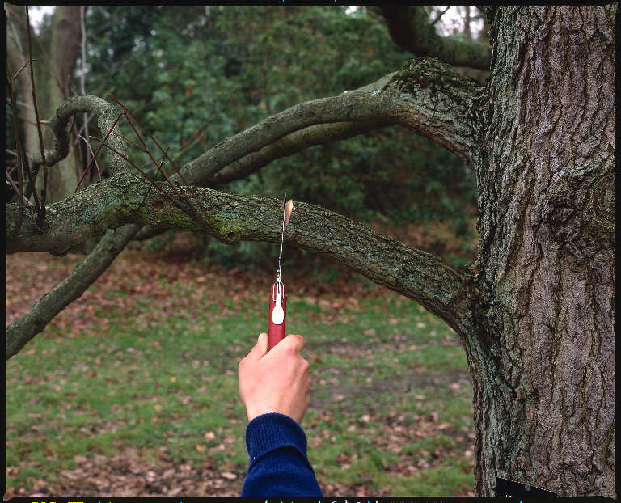

Ɛ - ɛ
ɛbɑlɑʈɛter ऐबालाटैतेर ADJ वि. lame; लंगड़ा. SD: attribute, विशेषता.
ɛbɛn ऐबैन ADJ वि. soft; नरम. ɛbɛn-tʰomɔ ऐबैन्थोमौ. soft flesh. नरम गोश्त. SD: attribute, विशेषता.
ɛbipʰilu ऐबीफीलू MORPH: ɛbi-pʰilu. VAR: ɛbi-fulu ऐबीफूलू. N सं. orphan; अनाथ. SD: relationship, सम्बंध.
ɛboe ऐबोए N सं. ripe; पका हुआ. SD: attribute, विशेषता.
ɛbor ऐबोर V क्रि. scratch; खुरचना.
ɛborɑke ऐबोराके MORPH: ɛ-borɑ-ke. V क्रि. blow; बजाओ.
ɛbot ऐबोत MORPH: ɛ-bot. N सं. thigh; जांघ. SD: body part term, शारीरिक अंग शब्दावली.
ɛbɔitɛrtubui ऐबौईतैरतूबूई MORPH: ɛ-bɔi-tɛr-tu-bui. N सं. co-wife; सौतन. SD: kin term, सम्बंधी वाचक शब्दावली.
ɛbɔkʈʰudil ऐबौकठूदील MORPH: ɛbɔk-ʈʰu-dil. V क्रि. split in the middle; बीच से काट देना. SEE: ekɑtɔr ‘cut in two halves’ ‘दो हिस्से में बांटना एकातौर ’.
ɛbɔpʰo ऐबौफो MORPH: ɛ-bɔ-pʰo. ADJ वि. stupid; बुद्धू. SD: attribute, विशेषता.
ɛbucɔ ऐबूचौ MORPH: ɛ-bucɔ. Etym: Sare; सारे. VAR: e-bucɔ एबूचौ. N सं. thigh; जांघ.  ʈʰ-e-bucɔ ठेबूचौ. my thigh. मेरी जांघ. SD: body part term, शारीरिक अंग शब्दावली.
ʈʰ-e-bucɔ ठेबूचौ. my thigh. मेरी जांघ. SD: body part term, शारीरिक अंग शब्दावली.
ɛββeo ऐब्बेओ N सं. a variety of bamboo; एक प्रकार का बांस. SD: flora, फूल-पत्ती.Environmental
ɛcɑeʈeʈ ऐचाएटेट ADJ वि. ugly; बदसूरत; कुरूप. SD: attribute, विशेषता.
ɛccɔːfe ऐच्चौऽफे VAR: ɛ-coɸe ऐचोफे. ADJ वि. more; अधिक; ज़्यादा. SD: quantifier, परिमाण वाचक. SEE: cɔpʰe ‘much; more; lots of; be enough’ ‘काफी; ज़्यादा; बहुत सारा; पर्याप्त चौफे ’.
ɛcebɑ ऐचेबा V क्रि. tie the pig with a rope to take it home; सूअर को रस्सी से बांधना.
ɛcolole ऐचोलोले MORPH: ɛ-co-lole. V क्रि. roll down; लुढ़कना. ʈʰɛŋ colole ठैङ चोलोले. I rolled down. मैं लुढ़का।. ʈʰu kɔroŋ-in-ɛ-colole ठू कौरोङ ईन - ऐ-चोलोले. I rolled the dugong down. मैंने डूगोंग को लुढ़काया।.
ɛcoːp ऐचौऽप MORPH: ɛ-coːp. N सं. a kind of rope; एक प्रकार की रस्सी. SD: household, घरेलू.
 ɛcorɔk ऐचोरौक MORPH: ɛ-corɔk. VAR: curok चूरोक. N सं. knee; घुटना.
ɛcorɔk ऐचोरौक MORPH: ɛ-corɔk. VAR: curok चूरोक. N सं. knee; घुटना.  ʈʰ-ɛ-corokʰ ठैचोरोख. my knee. मेरा घुटना. SD: body part term, शारीरिक अंग शब्दावली. SEE: ɑkɑpʰitcɔrok ‘area behind the knees’ ‘घुटनों का पिछला हिस्सा आकाफीतचौरोक ’.
ʈʰ-ɛ-corokʰ ठैचोरोख. my knee. मेरा घुटना. SD: body part term, शारीरिक अंग शब्दावली. SEE: ɑkɑpʰitcɔrok ‘area behind the knees’ ‘घुटनों का पिछला हिस्सा आकाफीतचौरोक ’.
ɛcɔkʰošip1 ऐचौखोशीप MORPH: ɛ-cɔkʰo-šip. VAR: eccɑːkkosip एच्चाऽक्कोसीप. N सं. brother’s wife; father’s sister; भाभी; बुआ. SD: kin term, सम्बंधी वाचक शब्दावली. SEE: ɛcɔkʰošip2 ‘sister, elder’ ‘बहन, बड़ी ऐचौखोशीपhm:{2}’.
ɛcɔkʰošip2 ऐचौखोशीप MORPH: ɛ-cɔkʰo-šip. N सं. elder sister; बड़ी बहन. SD: kin term, सम्बंधी वाचक शब्दावली. SEE: ɛcɔkʰošip1 ‘brother’s wife; father’s sister’ ‘भाभी; बुआ ऐचौखोशीपhm:{1}’.
ɛɖiʈ ऐडीट MORPH: ɛɖiʈ. V क्रि. dig a hole; गड्ढा खोदना. ɛɖiʈkɔm ऐडीटकौम. He is digging a hole. वह गड्ढा कर/ खोद रहा है।.
 ɛɖob ऐडोब ADJ वि. little ripe; थोड़ा पका हुआ. SD: attribute, विशेषता.
ɛɖob ऐडोब ADJ वि. little ripe; थोड़ा पका हुआ. SD: attribute, विशेषता.
ɛibiʈki ऐईबीट्की MORPH: ɛi-biʈki. N सं. balance; बहंगी. ʈʰ-ɛi-biʈki ठैईबीट्की. my balance. मेरी बहंगी. SD: household, घरेलू. NT: A balance-like structure made of two containers suspended on either end of a central pole, used to carry children or the sick. बच्चों या बीमार को ले जाने के लिए प्रयुक्त होती है।.
ɛkɑcɔlɔpʰe ऐकाचौलौफे V क्रि. clean up; साफ़ करना.
ɛkɑilɑbom ऐकाईलाबोम MORPH: ɛkɑ-ilɑ-bom. N सं. petals; पंखुड़ी. SD: flora, फूल-पत्ती.Environmental
ɛke ऐके VAR: eke एके. V क्रि. hold (this); पकड़ो (इसको). eːkke एऽक्के. Hold it. इसे पकड़ो।.
ɛkɛrɛk ऐकैरैक ADJ वि. bitter; कड़वा. SD: attribute, विशेषता.
ɛkɛt ऐकैत V क्रि. make rope; रस्सी बनाना.
ɛkkɑtɑ ऐक्काता MORPH: ɛk-kɑtɑ. VAR: ut-kɑtɑ ऊत्काता. N सं. very big piece (approx. 150 g); बहुत बड़ा टुकड़ा (लगभग 150 ग्राम). SD: attribute, विशेषता.
ɛkko ऐक्को CLT क्लिटिक. clitic, third singular object; तृतीय एकवचन कार्मिक क्लिटिक. SD: grammar, व्याकरण.
ɛkkoʈe ऐक्कोटे MORPH: ɛk-koʈe. V क्रि. extinguish; put off; बुझाना.
ɛkkɔːrɔ ऐक्कौऽरौ ADJ वि. dried thing; सूखी वस्तु. SD: attribute, विशेषता.
ɛko ऐको N सं. skin, of the stomach of turtles; कछुए के पेट की चमड़ी. SD: body part term, शारीरिक अंग शब्दावली.
 |
ɛkobɔ ऐकोबौ MORPH: ɛ-kobɔ. N सं. skin; त्वचा. ʈʰ-ɛ-kobɔ ठैकोबौ. my skin. मेरी त्वचा. SD: body part term, शारीरिक अंग शब्दावली.
ɛkʰom ऐखोम MORPH: ɛ-kʰom. V क्रि. chew (sugarcane); गन्ना चूसना.
 |
ɛkopʰo ऐकोफो MORPH: ɛ-kopʰo. V क्रि. cut; काटना. ŋo-ʈɔkʰo-be-kopʰom ङोटौखोबेकोफोम. Don’t cut trees. पेड़ मत काटो।.
 ɛkotrɑtɑrɑtɑ ऐकोत्राताराता MORPH: ɛ-kotrɑ-tɑrɑ-tɑ. N सं. pelvis; श्रोणि.
ɛkotrɑtɑrɑtɑ ऐकोत्राताराता MORPH: ɛ-kotrɑ-tɑrɑ-tɑ. N सं. pelvis; श्रोणि.  ʈʰɛkotrɑtɑrɑtɑ ठैकोत्राताराता. my pelvis. मेरी श्रोणि. SD: body part term, शारीरिक अंग शब्दावली.
ʈʰɛkotrɑtɑrɑtɑ ठैकोत्राताराता. my pelvis. मेरी श्रोणि. SD: body part term, शारीरिक अंग शब्दावली.
ɛkʰɔnleo ऐखौन्लेओ MORPH: ɛkʰɔn-leo. N सं. attain puberty; यौवनारंभ. SD: attribute, विशेषता.
 ɛkɔpʰo ऐकौफो MORPH: ɛ-kɔpʰo. V क्रि. sprouting of leaves on a tree; कल्ले निकलना. kʰider-tɑ-kɔpʰo खीदेरताकौफो. The coconut tree sprouted new leaves. नारियल के पेड़ में कल्ले निकले हैं।. SEE: ikʰu ‘yellow outgrowth (of a big tree)’ ‘कल्ले फूटना ईखू ’.
ɛkɔpʰo ऐकौफो MORPH: ɛ-kɔpʰo. V क्रि. sprouting of leaves on a tree; कल्ले निकलना. kʰider-tɑ-kɔpʰo खीदेरताकौफो. The coconut tree sprouted new leaves. नारियल के पेड़ में कल्ले निकले हैं।. SEE: ikʰu ‘yellow outgrowth (of a big tree)’ ‘कल्ले फूटना ईखू ’.
ɛkrɛ ऐक्रै V क्रि. catch prey; शिकार मिलना. o-ɛk-rɛ ओऐक्रै. He found the prey. उसको शिकार मिला।. NT: Uttered with a rising tone the word means “Did you catch anything?” उत्तान के साथ बोले जाने पर इस शब्द का अर्थ है “क्या शिकार मिला?”
ɛkrɔco ऐक्रौचो V क्रि. appear from above; ऊपर से प्रकट होना.
ɛkte ऐक्ते V क्रि. elope; किसी के साथ भाग जाना. cɑe-kʰude-u-ʈʰe-bo-ɛkte bolbo चाए खूदे ऊ ठे बो ऐक्ते बोल्बो. Why did you run away with my wife? तुम मेरी पत्नी के साथ क्यों भागे?
ɛkterole ऐकतेरओले MORPH: ɛk-ter-ole. V क्रि. let someone see; देखने देना.  boɑ-ɛk-ter-olo-fom बोआ ऐकतेरओलो फोम. Boa does not let her see (it). बोआ उसको देखने नहीं देती है।.
boɑ-ɛk-ter-olo-fom बोआ ऐकतेरओलो फोम. Boa does not let her see (it). बोआ उसको देखने नहीं देती है।.
ɛktɛrcoic ऐक्तैरचोईच MORPH: ɛk-tɛr-coic. V क्रि. embrace each other; गले मिलना.
ɛktɛreu ऐकतैरेऊ MORPH: ɛk-tɛreu. N सं. bundle; गठरी.
V क्रि. bundle; गठरी बांधना.
ɛktɛrtol ऐक्तैरतोल Etym: Sare; सारे. V क्रि. shoot an arrow; तीर चलाना.
ɛktʰobɑ ऐकथोबा MORPH: ɛk-tʰobɑ. V क्रि. spit; थूकना.
 ɛkʈɛɲe ऐकटैञे MORPH: ɛk-ʈɛɲ-e. V क्रि. spit; थूकना.
ɛkʈɛɲe ऐकटैञे MORPH: ɛk-ʈɛɲ-e. V क्रि. spit; थूकना.
N सं. sputum; बलगम. u-ʈʰi-eʈ-eɲ-om ऊठीएटेञोम. He spits at me. वह मुझ पर थूकता है।. ɛk ʈɛɲe-ke ऐकटैङे के. Spit it out. इसे थूक दो ।.
 ɛkuropʰu ऐकूरोफू MORPH: ɛ-kuro-pʰu. N सं. sharp knife; तेज़ धार वाली छुरी. SD: tool, औज़ार, household, घरेलू.
ɛkuropʰu ऐकूरोफू MORPH: ɛ-kuro-pʰu. N सं. sharp knife; तेज़ धार वाली छुरी. SD: tool, औज़ार, household, घरेलू.
 ɛleɑ ऐलेआ VAR: ɛlleɑ ऐल्लेआ. ADV क्रि वि. be slow (as in walking); धीरे (चलने में).
ɛleɑ ऐलेआ VAR: ɛlleɑ ऐल्लेआ. ADV क्रि वि. be slow (as in walking); धीरे (चलने में).
ADJ वि. weak to walk; चलने में कमजोर. ʈʰɛm liɑ bom ठैम लीआ बोम. I am weak. मुझमें ताकत नहीं है।.  enliɑkom एन्लीआकोम. (He) walks slowly. (वह) धीरे से चलता है।. SD: attribute, विशेषता.
enliɑkom एन्लीआकोम. (He) walks slowly. (वह) धीरे से चलता है।. SD: attribute, विशेषता.
ɛleo ऐलेओ VAR: ɛlleo ऐल्लेओ. N सं. younger than; किसी से छोटा या छोटी.
ADJ वि. small (as in the case of a house); छोटा (घर). ɲɔ leo ञौ लेओ. small house. छोटा घर. SD: quantifier, परिमाण वाचक.
ɛlɛŋ ऐलैङ ADJ वि. not very sweet; कम मीठा. SD: attribute, विशेषता.
ɛlɛɔ ऐलैऔ N सं. infant; बच्चा. SD: people, लोग.
ɛlɛːwfe ऐलैऽवफे ADJ वि. old; big; पुराना; बड़ा. SD: attribute, विशेषता.
ɛlɛːwʈeːʈ ऐलैऽवटेऽट ADJ वि. short (animate); छोटा (सजीव). SD: attribute, विशेषता.
ɛlimiu ऐलीमीऊ MORPH: ɛ-limiu. V क्रि. get tingling feeling in the limb; झुनझुनी चढ़ना. ɲ-ɛ-limiu ञैलीमीऊ. Your foot has become numb. तुम्हारा पैर सो गया है।. ʈʰɑ-uno ʈʰɑ-tɑ-limiyo ठाऊनो ठातालीमीयो. I felt tingling sensation while I was sitting. बैठे-बैठे मुझे झुनझुनी चढ़ गई।.
ɛliʈiyuːw ऐलीटीयूऽव ADJ वि. pink colour; गुलाबी रंग. SD: attribute, विशेषता.
ɛljio ऐलजीओ MORPH: ɛl-jio. V क्रि. be in a place; एक जगह पर रहना.
ɛloːwbe ऐलोऽवबे V क्रि. read; पढ़ना. SEE: iɑretɑːke ‘study’ ‘पढ़ो ईआरेताऽके ’.
ɛm ऐम PARTICLE नि. self; अपना. ɑrɑŋ-sulu-ɛm आराङसूलूऐम. (one’s) younger brother. (अपना) छोटा भाई. SD: reference, संदर्भ.
ɛmbɑrɑte ऐमबाराते MORPH: ɛm-bɑrɑte. V क्रि. flutter; फड़फड़ाना.
ɛmbo ऐमबो V क्रि. know (reflexive); जानना (ख़ुद को).
ɛmboe ऐमबोए MORPH: ɛm-boe. V क्रि. marry; विवाह करना. ʈʰɛmboe-bɔm ठैमबोए-बौम. I am going to marry. मैं शादी करने वाला हूं।.
COMITATIVE सं वा. with the husband; अपने पति के साथ.
ɛmbolo ऐम्बोलो N सं. bruise; खरोंच. SD: illness, रोग.
ɛmborɑcɛ ऐमबोराचै MORPH: ɛm-bo-rɑ-cɛ. V-REFL निज क्रि. be angry with oneself; अपने-आप से गुस्सा होना.
 ɛmeʈʰo ऐमेठो VAR: ɛmɛʈʰo ऐमैठो; ɛmiʈʰu ऐमीठू. V क्रि. bury; गाड़ना.
ɛmeʈʰo ऐमेठो VAR: ɛmɛʈʰo ऐमैठो; ɛmiʈʰu ऐमीठू. V क्रि. bury; गाड़ना.
ɛmɛtʰ ऐमैथ MORPH: ɛ-mɛtʰ. V क्रि. plant; पेड़-पौधे लगाना.
ɛmɛyo ऐमैयो ADJ वि. small; छोटा. SD: attribute, विशेषता.
ɛmpʰɛ ऐमफै V क्रि. dive; गोता लगाना; तैरना. ɲ-em-pʰe-be ञेमफेबे. Dive in water. पानी में कूदो।.
ɛmpʰil ऐमफील V क्रि. kill; जान से मारना.
N सं. death; मृत्यु.
ɛmpʰilo ऐमफीलो N सं. deceased person; मृत आदमी. SD: attribute, विशेषता, people, लोग.
ɛn ऐन N सं. bruise; wound; खरोंच; घाव. SD: illness, रोग.
ɛncɑie ऐनचाईए MORPH: ɛn-cɑi-e. V क्रि. spoil; बर्बाद या गंदा करना.
ɛndɑːyccol ऐनदाऽयच्चोल Q परि. last; अंतिम; आख़िर. SD: quantifier, परिमाण वाचक.
 ɛnoke ऐनोके V क्रि. knit; cane; बेंत को सिलना.
ɛnoke ऐनोके V क्रि. knit; cane; बेंत को सिलना.  tɑ-ono-tisu-ɛnoke ताओनो तीसू ऐनोके. make something of cane to sit on. बेंत से कोई चीज़ बनाना जिस पर बैठा जा सके.
tɑ-ono-tisu-ɛnoke ताओनो तीसू ऐनोके. make something of cane to sit on. बेंत से कोई चीज़ बनाना जिस पर बैठा जा सके.
ɛnolpʰo एनोलफो MORPH: ɛ-nol-pʰo. ADJ वि. bad (person); बुरा आदमी. SD: attribute, विशेषता.
ɛnolʈɔʈceo ऐनोलटौटचेओ MORPH: ɛ-nol-ʈɔʈ-ceo. N सं. level-headed and calm person; भला/शांत आदमी. SD: attribute, विशेषता.
ɛnɔlpʰokɑjukʰi ऐनौलफोकाजूखी MORPH: ɛnɔl-pʰo-kɑ-jukʰi. N सं. one who is not good; अच्छा वाला नहीं. SD: attribute, विशेषता.
ɛntɑcɔl ऐनताचौल V क्रि. smooth; shine (wood, wall, etc.); चिकना करना; चमकाना (दीवार, लकड़ी आदि को).
ɛnʈec ऐनटेच N सं. an instrument used for catching fish; औज़ार जो मछली पकड़ने में प्रयोग होता है. SD: tool, औज़ार.
ɛŋio ऐङीओ V क्रि. dance; नाचना.
ɛŋkɛlon ऐङकैलोन V क्रि. turn over; पलटना.
 ɛŋɔce ऐङौचे MORPH: ɛŋɔc-e. V क्रि. itch; खुजाओ.
ɛŋɔce ऐङौचे MORPH: ɛŋɔc-e. V क्रि. itch; खुजाओ.
 ɛone ऐओने MORPH: ɛ-one. N सं. milk of coconut; नारियल पानी. SD: edible item, खाद्य सामग्री.Environmental
ɛone ऐओने MORPH: ɛ-one. N सं. milk of coconut; नारियल पानी. SD: edible item, खाद्य सामग्री.Environmental
ɛople ऐओपले ADJ वि. light in weight; हल्का. SD: attribute, विशेषता.
ɛorokʰuil ऐओरोखूईल MORPH: ɛo-rokʰu-il. ADV क्रि वि. in youth; while young; युवावस्था में. ɛorokʰuil untɑole nɔllɔ ऐओरोखूईल ऊन्ताओले नौल्लौ. He was good-looking in his youth. वह अपने युवावस्था में सुंदर था।. SD: time, समय.
ɛɔrɔkʰui1 ऐऔरौखूई N सं. young man; जवान आदमी. SD: people, लोग, attribute, विशेषता. SEE: ɛɔrɔkʰui2 ‘young’ ‘जवान ऐऔरौखूईhm:{2}’.
ɛɔrɔkʰui2 ऐऔरौखूई ADJ वि. young; जवान. SD: attribute, विशेषता. SEE: ɛɔrɔkʰui1 ‘man, young’ ‘आदमी, जवान ऐऔरौखूईhm:{1}’.
ɛpʰɑr1 ऐफार MORPH: ɛ-pʰɑr. N सं. ulcer; फोड़ा; व्रण. SD: illness, रोग. SEE: ɛpʰɑr2 ‘wounded’ ‘ज़ख्मी ऐफारhm:{2}’.
ɛpʰɑr2 ऐफार MORPH: ɛ-pʰɑr. ADJ वि. wounded; ज़ख्मी. ʈʰɛ-ɛpʰɑr be ठै ऐफार बे. I am wounded. मैं घायल हूं।. SD: attribute, विशेषता. SEE: ɛpʰɑr1 ‘ulcer’ ‘फोड़ा; व्रण ऐफारhm:{1}’.
ɛpʰerɛc ऐफेरैच MORPH: ɛ-pʰerɛc. V क्रि. bite (of dog); cut, with teeth; कुत्ते का काटना; दांत से काटना.
ɛpʰɛce ऐफैचे MORPH: ɛ-pʰɛc-e. Etym: Khora; खोरा. V क्रि. bite (to eat); काटना (खाने के लिये).
ɛpʰɛrec ऐफैरेच MORPH: ɛ-pʰɛrec. N सं. mosquito bite; मच्छर का काटना. SD: illness, रोग.
ɛpʰɛʈɛr ऐफैटैर DEIXIS डीक्सीस. side; बगल; बाजू में. SD: space, अन्तरिक्ष. NT: The term can be used both for the left or the right side. बाएं तरफ़ या दाएं तरफ़, दोनों के लिए प्रयुक्त किया जाता है।.Environmental
ɛpʰo ऐफो V क्रि. pull up; खींच कर उठाना.
 |
 ɛpʰoŋ1 ऐफोङ N सं. grave; क़ब्र. SD: death, मृत्यु सम्बंधी. SEE: ɛpʰoŋ2 ‘hole’ ‘छेद ऐफोङhm:{2}’.
ɛpʰoŋ1 ऐफोङ N सं. grave; क़ब्र. SD: death, मृत्यु सम्बंधी. SEE: ɛpʰoŋ2 ‘hole’ ‘छेद ऐफोङhm:{2}’.
 |
 ɛpʰoŋ2 ऐफोङ N सं. hole; छेद. SD: death, मृत्यु सम्बंधी. SEE: ɛpʰoŋ1 ‘grave’ ‘क़ब्र ऐफोङhm:{1}’.
ɛpʰoŋ2 ऐफोङ N सं. hole; छेद. SD: death, मृत्यु सम्बंधी. SEE: ɛpʰoŋ1 ‘grave’ ‘क़ब्र ऐफोङhm:{1}’.
 ɛpʰor ऐफोर MORPH: ɛ-pʰor. N सं. fallen tree; गिरा हुआ पेड़. SD: flora, फूल-पत्ती.Environmental
ɛpʰor ऐफोर MORPH: ɛ-pʰor. N सं. fallen tree; गिरा हुआ पेड़. SD: flora, फूल-पत्ती.Environmental
ɛpʰuŋ ऐफूंग MORPH: ɛ-pʰuŋ. ADJ वि. overripe; ज़्यादा पक गया. SD: attribute, विशेषता.
ɛːr ऐःर N सं. a kind of bitter fruit; एक प्रकार का कड़वा फल. SD: edible fruit, खाद्य फल.Environmental
ɛrɑce ऐराचे MORPH: ɛ-rɑce. N सं. sting; डंक. SD: insect & invertebrate, कीट-पतंग एवं अरीढ़ जीव.Environmental
ɛrɑɛlio ऐराऐलीओ MORPH: ɛrɑ-ɛlio. ADJ वि. small; little; finished all; छोटा; थोड़ा; सब ख़त्म हो गया. SD: quantifier, परिमाण वाचक.
ɛrɑːkɑːmu ऐराऽकाऽमू Q परि. many; कई; अनेक. SD: quantifier, परिमाण वाचक.
ɛrɑkʰiu ऐराखीऊ MORPH: ɛ-rɑkʰiu. V क्रि. pour; उड़ेलना. bɛi-tɑi-rɑkʰiu-we बैई ताई राखीऊ वे. Pour from the bottle. बोतल से उड़ेलो।.
ɛrɑkotʰe ऐराकोथे V क्रि. stir; पकते हुए खाने को चलाना या हिलाना.
ɛrbɑlɑ ऐरबाला MORPH: ɛr-bɑlɑ. N सं. upper arm; बांह का ऊपरी हिस्सा. SD: body part term, शारीरिक अंग शब्दावली. ʈʰɛrbɑlɑ ठैरबाला. my upper arm. मेरी बांह का ऊपरी हिस्सा.
ɛrbɑn ऐरबान MORPH: ɛr-bɑn. V क्रि. hold; पकड़ना. iku (jukʰi) ɑʈ-b-ɛr bɑn-em ईकू (जूखी) आटबैर बानेम. Do not hold the burning wood. जलती लकड़ी को मत पकड़ो।.
ɛrbɑt एरबात MORPH: ɛr-bɑt. VAR: erbɑːt एरबाऽत. V क्रि. put out the light; extinguish fire; बत्ती बुझाना; आग बुझाना. erbɑːtte एरबाऽत्ते. Switch off the light. बत्ती बुझा दो।.
ɛrbiɖo ऐरबीडो MORPH: ɛr-biɖo. N सं. circular design (etched on the forehead); माथे पर गुदी हुई गोलाकार रचना. SD: costume & adornment, आभूषण एवं श्रृंगार.
ɛrbiŋui ऐरबीञूई MORPH: ɛr-biŋui. N सं. sparkling body; beautiful body; खिला बदन. SD: attribute, विशेषता.
ɛrborɑke ऐरबोराके MORPH: ɛr-borɑke. V क्रि. blow out (fire); फूंक मारना (आग).
ɛrbuko ऐरबूको MORPH: ɛr-buko. N सं. girl; female; लड़की. SD: people, लोग.
ɛrbuŋoi ऐरबूङोई MORPH: ɛr-buŋoi. ADJ वि. beautiful; सुंदर.  ɑ-surme ɛrbuŋoi bi आसुरमे ऐरबूङोई बी. Surmai looks beautiful. सुरमे सुंदर है।. SD: attribute, विशेषता.
ɑ-surme ɛrbuŋoi bi आसुरमे ऐरबूङोई बी. Surmai looks beautiful. सुरमे सुंदर है।. SD: attribute, विशेषता.
 ɛrcɑrɑ1 ऐरचारा MORPH: ɛr-cɑrɑ. N सं. chips; pieces, very fine; कतला; बहुत महीन टुकड़े. mino-ɛr-cɑrɑ मीनो-ऐरचारा. potato chips. आलू के कतले. SD: edible item, खाद्य सामग्री. SEE: ɛrcɑrɑ2 ‘wood shaving; sawdust’ ‘लकड़ी का घिसा हुआ टुकड़ा; बुरादा ऐरचाराhm:{2}’.Environmental
ɛrcɑrɑ1 ऐरचारा MORPH: ɛr-cɑrɑ. N सं. chips; pieces, very fine; कतला; बहुत महीन टुकड़े. mino-ɛr-cɑrɑ मीनो-ऐरचारा. potato chips. आलू के कतले. SD: edible item, खाद्य सामग्री. SEE: ɛrcɑrɑ2 ‘wood shaving; sawdust’ ‘लकड़ी का घिसा हुआ टुकड़ा; बुरादा ऐरचाराhm:{2}’.Environmental
ɛrcɑrɑ2 ऐरचारा MORPH: ɛr-cɑrɑ. N सं. wood shaving; sawdust; लकड़ी का घिसा हुआ टुकड़ा; बुरादा. SD: household, घरेलू. SEE: ɛrcɑrɑ1 ‘chips; pieces, very fine cut’ ‘कतला; टुकड़े, बहुत महीन कटे हुए ऐरचाराhm:{1}’.
ɛrcɛk1 ऐरचैक N सं. devil; शैतान. SD: mythology, पौराणिक. SEE: ɛrcɛk2 ‘rogue’ ‘बदमाश ऐरचैकhm:{2}’.
ɛrcɛk2 ऐरचैक ADJ वि. rogue; बदमाश. SD: attribute, विशेषता. SEE: ɛrcɛk1 ‘devil’ ‘शैतान ऐरचैकhm:{1}’.
 ɛrcɛktutbolo ऐरचैकतूतबोलो MORPH: ɛr-cɛk-tut-bolo. ADJ वि. person of angry nature; गुस्सैल. SD: attribute, विशेषता.
ɛrcɛktutbolo ऐरचैकतूतबोलो MORPH: ɛr-cɛk-tut-bolo. ADJ वि. person of angry nature; गुस्सैल. SD: attribute, विशेषता.
 ɛrco1 ऐरचो MORPH: ɛr-co. VAR: er-co एरचो. Etym: North Andaman; उत्तरी अण्डमान. VAR: ɛco ऐचो. N सं. fruit; फल. SD: edible fruit, खाद्य फल. SEE: ɛrco2 ‘head; skull’ ‘सिर; खोपड़ी ऐरचोhm:{2}’.Environmental
ɛrco1 ऐरचो MORPH: ɛr-co. VAR: er-co एरचो. Etym: North Andaman; उत्तरी अण्डमान. VAR: ɛco ऐचो. N सं. fruit; फल. SD: edible fruit, खाद्य फल. SEE: ɛrco2 ‘head; skull’ ‘सिर; खोपड़ी ऐरचोhm:{2}’.Environmental
 ɛrco2 ऐरचो MORPH: ɛr-co. VAR: er-co एरचो. Etym: North Andaman; उत्तरी अण्डमान. VAR: ɛco ऐचो. N सं. head; skull; सिर; खोपड़ी. ʈʰerco ठेरचो. my head. मेरा सिर. SD: body part term, शारीरिक अंग शब्दावली. SEE: ɛrco1 ‘fruit’ ‘फल ऐरचोhm:{1}’.
ɛrco2 ऐरचो MORPH: ɛr-co. VAR: er-co एरचो. Etym: North Andaman; उत्तरी अण्डमान. VAR: ɛco ऐचो. N सं. head; skull; सिर; खोपड़ी. ʈʰerco ठेरचो. my head. मेरा सिर. SD: body part term, शारीरिक अंग शब्दावली. SEE: ɛrco1 ‘fruit’ ‘फल ऐरचोhm:{1}’.
ɛrcoie ऐरचोइए MORPH: ɛr-coie. VAR: ɛrcuye ऐरचूए. N सं. headache; सिरदर्द. SD: illness, रोग.
ɛrcotɑrɑtɑ ऐरचोताराता MORPH: ɛr-co-tɑrɑ-tɑ. N सं. back of the head; सिर का पिछला हिस्सा.  ʈʰɛr-co-tɑrɑ-tɑ ठैरचोताराता. back of my head. मेरे सिर का पिछला हिस्सा. SD: body part term, शारीरिक अंग शब्दावली.
ʈʰɛr-co-tɑrɑ-tɑ ठैरचोताराता. back of my head. मेरे सिर का पिछला हिस्सा. SD: body part term, शारीरिक अंग शब्दावली.
ɛrcouttɑrɑ ऐरचोऊत्तारा MORPH: ɛr-co-ut-tɑrɑ. N सं. top of the head; कपाल. SD: body part term, शारीरिक अंग शब्दावली.
 ɛrɖiʈʰ ऐरडीठ MORPH: ɛr-ɖiʈʰ. V क्रि. pierce; छेद करना.
ɛrɖiʈʰ ऐरडीठ MORPH: ɛr-ɖiʈʰ. V क्रि. pierce; छेद करना.  ɛr-buo-ɖiʈʰ ऐरबूओडीठ. ear-piercer. कनछेदन.
ɛr-buo-ɖiʈʰ ऐरबूओडीठ. ear-piercer. कनछेदन.
 |
 ɛren ऐरेन N सं. deer; हिरन. SD: animal, जानवर. NT: Borrowed from Hindi. This deer is not indigenous to the Andaman Islands. हिन्दी से लिया गया शब्द, हिरन अण्डमान द्वीपों के लिए स्वदेशी नहीं है।.
ɛren ऐरेन N सं. deer; हिरन. SD: animal, जानवर. NT: Borrowed from Hindi. This deer is not indigenous to the Andaman Islands. हिन्दी से लिया गया शब्द, हिरन अण्डमान द्वीपों के लिए स्वदेशी नहीं है।.
ɛrencɑe ऐरेन्चाए V क्रि. sulk; रूठना.
ɛrencɛtʰe ऐरेन्चैथे MORPH: ɛren-cɛtʰe. ADV क्रि वि. with anger; गुस्से से. SD: attribute, विशेषता.
ɛrenʈʰicɑyɑ ऐरेनठीचाया MORPH: ɛren-ʈʰi-cɑyɑ. IDIOM मु. bad luck; दुर्भाग्य. SD: attribute, विशेषता.
ɛreːɲko ऐरेऽञको N सं. a kind of bird; एक प्रकार का पक्षी. SD: bird, पक्षी.Environmental
ɛrɛice ऐरैईचे MORPH: ɛr-ɛ-ice. V क्रि. fishing with arrow; तीर से मछली मारना.
ɛrɛm ऐरैम PRN सर्व. himself; अपने-आप. SD: reference, संदर्भ.
ɛrɛmfol ऐरैम्फोल MORPH: ɛrɛm-fol. V क्रि. love each other; एक-दूसरे से प्यार करना.
ɛrino ऐरीनो V क्रि. tear; फाड़ना.
ɛrjukʰu1 ऐरजूखू MORPH: ɛr-jukʰu. VAR: erjuxu एरजूखू. N सं. beak; चोंच. SD: body part term, शारीरिक अंग शब्दावली. SEE: ɛrjukʰu2 ‘space between nose and lips’ ‘नाक और होंठ के बीच का स्थान ऐरजूखूhm:{2}’.
ɛrjukʰu2 ऐरजूखू MORPH: ɛr-jukʰu. VAR: er-jukʰu एरजूखू. N सं. space between nose and lips; नाक और होंठ के बीच का स्थान. ʈʰ-er-jukʰu ठेरजूखू. my moustache. मेरी मूंछ. SD: body part term, शारीरिक अंग शब्दावली. SEE: ɛrjukʰu1 ‘beak’ ‘चोंच ऐरजूखूhm:{1}’.
ɛrkɑrɑ ऐरकारा MORPH: ɛr-kɑrɑ. VAR: er-kɑːrɑ एरकाऽरा. N सं. birthplace; जन्मस्थान. ɲɛr-kɑrɑ utconnebom ञैरकारा ऊत्चोन्नेबोम. You go where you were born. जहां तुम्हारा जन्म हुआ है, तुम वहां जाओ।. SD: habitat, रहन-सहन.
 ɛrkoʈʰo ऐरकोठो MORPH: ɛr-koʈʰo. V क्रि. mix; मिश्रण; मिलाना; घोलना.
ɛrkoʈʰo ऐरकोठो MORPH: ɛr-koʈʰo. V क्रि. mix; मिश्रण; मिलाना; घोलना.
ɛrkɔʈʰɔʈɔi ऐरकौठौटौई MORPH: ɛr-kɔʈʰɔ-ʈɔi. N सं. sinew; नस. ʈʰ-ɛrkɔʈʰɔʈɔi ठैरकौठौटौई. my sinew. मेरी नस. SD: body part term, शारीरिक अंग शब्दावली.
ɛrkʰuro ऐरखूरो ADJ वि. elder; big; बड़ा; विशाल. SD: attribute, विशेषता.
ɛrlɑ ऐरला VAR: ɛɽlɑ एड़ला. ADJ वि. alone; अकेला. SD: relationship, सम्बंध.
ɛrliu ऐरलीऊ MORPH: ɛr-liu. N सं. bark; छाल. ʈʰɛrliu ठैरलीऊ. my bark. मेरी छाल. SD: flora, फूल-पत्ती.Environmental
 ɛrliue ऐरलीऊए MORPH: ɛr-liu-e. VAR: ɛr-lɑu-yu ऐरलाऊयू. V क्रि. clean or shave hair with blade (portions such as moustache, sideburns and forehead.); बालों को ब्लेड से काटना (हिस्से जैसे कि मूंछ, कलम, माथा, आदि). er-bec-ik lue एरबेचीक लूए. Cut the hair in front (forehead). सामने के बाल काटो।.
ɛrliue ऐरलीऊए MORPH: ɛr-liu-e. VAR: ɛr-lɑu-yu ऐरलाऊयू. V क्रि. clean or shave hair with blade (portions such as moustache, sideburns and forehead.); बालों को ब्लेड से काटना (हिस्से जैसे कि मूंछ, कलम, माथा, आदि). er-bec-ik lue एरबेचीक लूए. Cut the hair in front (forehead). सामने के बाल काटो।.
ɛrlɔcɔŋ1 ऐरलौचौङ MORPH: ɛr-lɔcɔŋ. N सं. horn; सींग. SD: body part term, शारीरिक अंग शब्दावली. SEE: ɛrlɔcɔŋ2 ‘point of an arrow’ ‘तीर की नोक ऐरलौचौङhm:{2}’.
ɛrlɔcɔŋ2 ऐरलौचौङ N सं. point of an arrow; तीर की नोक. SD: hunting & gathering, शिकार एवं संचय सम्बंधी. SEE: ɛrlɔcɔŋ1 ‘horn’ ‘सींग ऐरलौचौङhm:{1}’.Environmental
ɛrmɛ ऐरमै N सं. bowstring; धनुष की डोर. SD: hunting & gathering, शिकार एवं संचय सम्बंधी.Environmental
 ɛrmotoʈɔy ऐरमोतोटौय MORPH: ɛr-moto-ʈɔy. N सं. calf bone; पिण्डली की हड्डी. ʈʰ-ɛr-moto-ʈɔy ठैरमोतोटौय. my calf bone. मेरी पिण्डली की हड्डी. SD: body part term, शारीरिक अंग शब्दावली.
ɛrmotoʈɔy ऐरमोतोटौय MORPH: ɛr-moto-ʈɔy. N सं. calf bone; पिण्डली की हड्डी. ʈʰ-ɛr-moto-ʈɔy ठैरमोतोटौय. my calf bone. मेरी पिण्डली की हड्डी. SD: body part term, शारीरिक अंग शब्दावली.
ɛrnɑnɑle ऐरनानाले MORPH: ɛr-nɑnɑle. ADJ वि. miniature; little one; महीन; छोटा. SD: attribute, विशेषता.
 ɛrnɔkʰo ऐरनौखो MORPH: ɛr-nɔkʰo. N सं. cheeks; गाल. ʈʰ-ɛr-nɔkʰo ठेरनौखो. my cheeks. मेरे गाल. SD: body part term, शारीरिक अंग शब्दावली.
ɛrnɔkʰo ऐरनौखो MORPH: ɛr-nɔkʰo. N सं. cheeks; गाल. ʈʰ-ɛr-nɔkʰo ठेरनौखो. my cheeks. मेरे गाल. SD: body part term, शारीरिक अंग शब्दावली.
 ɛrole ऐरोले V क्रि. beckon; किसी को हाथ हिलाकर बुलाना.
ɛrole ऐरोले V क्रि. beckon; किसी को हाथ हिलाकर बुलाना.
ɛrɔklepʰo ऐरौक्लेफो MORPH: ɛ-rɔklepʰo. N सं. fall; पतझड़. SD: season, मौसम.Environmental
ɛrɔne ऐरौने N सं. coral flower; मूंगा या मोती का फूल. SD: flora, फूल-पत्ती.Environmental
 ɛrɔpilipʰu ऐरौपीलीफू MORPH: ɛrɔpili-pʰu. ADV क्रि वि. incessant; लगातार.
ɛrɔpilipʰu ऐरौपीलीफू MORPH: ɛrɔpili-pʰu. ADV क्रि वि. incessant; लगातार.  ji-cɛr-bi ɛrɔpili pʰu जीचैरबी ऐरौपीली फू. It was raining nonstop. लगातार बारिश हो रही थी।. SD: manner, रीतिवाचक.
ji-cɛr-bi ɛrɔpili pʰu जीचैरबी ऐरौपीली फू. It was raining nonstop. लगातार बारिश हो रही थी।. SD: manner, रीतिवाचक.
ɛrpʰet ऐरफेत MORPH: ɛr-pʰet. VAR: ɛr-pʰɛt ऐरफैत. DEIXIS डीक्सीस. across; उस पार. ʈʰɛrpʰet ठैरफेत. across me. मेरे उस पार. SD: space, अन्तरिक्ष.Environmental
ɛrpʰile1 ऐरफीले MORPH: ɛr-pʰile. N सं. saw; आरी. SD: tool, औज़ार. SEE: ɛrpʰile2 ‘teeth’ ‘दांत ऐरफीलेhm:{2}’.
 |
 ɛrpʰile2 ऐरफीले VAR: ɛrɸiwe ऐरफीवे. N सं. teeth; दांत. ʈʰ-ɛr-pʰile ठैरफीले. my teeth. मेरा दांत.
ɛrpʰile2 ऐरफीले VAR: ɛrɸiwe ऐरफीवे. N सं. teeth; दांत. ʈʰ-ɛr-pʰile ठैरफीले. my teeth. मेरा दांत.  meŋerpʰile मेङेरफीले. our teeth. हमारे दांत. SD: body part term, शारीरिक अंग शब्दावली. SEE: ɛrpʰile1 ‘saw’ ‘आरी ऐरफीलेhm:{1}’.
meŋerpʰile मेङेरफीले. our teeth. हमारे दांत. SD: body part term, शारीरिक अंग शब्दावली. SEE: ɛrpʰile1 ‘saw’ ‘आरी ऐरफीलेhm:{1}’.
 ɛrpʰoke ऐरफोके MORPH: ɛr-pʰo-ke. V क्रि. hit on the head (from front); सामने से सिर पर मारना.
ɛrpʰoke ऐरफोके MORPH: ɛr-pʰo-ke. V क्रि. hit on the head (from front); सामने से सिर पर मारना.  ɛr pʰoke empʰil ऐर फोके एमफील. hit on the head with the purpose of killing. सिर पर मारना (जान से मारने के लिए).
ɛr pʰoke empʰil ऐर फोके एमफील. hit on the head with the purpose of killing. सिर पर मारना (जान से मारने के लिए).
 ɛrpʰol ऐरफोल MORPH: ɛr-pʰol. VAR: pʰol फोल. V क्रि. hit with a stick; डंडे से मारना.
ɛrpʰol ऐरफोल MORPH: ɛr-pʰol. VAR: pʰol फोल. V क्रि. hit with a stick; डंडे से मारना.  ʈokʰotɑ ɛmbo ɛrpʰol ɛmpʰilo टोखोता ऐमबो ऐरफोल ऐमफीलो. He beat his wife to death with a stick. उसने अपनी पत्नी को डंडे से मारकर मार डाला।.
ʈokʰotɑ ɛmbo ɛrpʰol ɛmpʰilo टोखोता ऐमबो ऐरफोल ऐमफीलो. He beat his wife to death with a stick. उसने अपनी पत्नी को डंडे से मारकर मार डाला।.
ɛrpʰoŋ ऐरफोङ MORPH: ɛr-pʰoŋ. VAR: ɛrfon ऐरफोन; foːn फोऽन; pʰon फोन. N सं. nostrils; नथुना; रन्ध्र. SD: body part term, शारीरिक अंग शब्दावली.
ɛrpʰɔke ऐरफौके MORPH: ɛr-pʰɔke. VAR: e-pʰɔkke एफौक्के. V क्रि. take out from hot/ fire; गर्मी या आग से बाहर निकालना.
 ɛrsɛrep ऐरसैरेप MORPH: ɛr-sɛrep. VAR: sɛrɛp सैरैप; šɛrep शैरेप. V क्रि. hit with stone-like object; attack; cut; पत्थर से मारना; प्रहार करना; काटना. lico ʈʰi ɑʈ-bi sɛrɛ-bi-liwo लीचो ठी आटबी सैरै बी लीवो. Lico is making me cut the wood. लीचो मुझसे लकड़ी कटवा रही है।.
ɛrsɛrep ऐरसैरेप MORPH: ɛr-sɛrep. VAR: sɛrɛp सैरैप; šɛrep शैरेप. V क्रि. hit with stone-like object; attack; cut; पत्थर से मारना; प्रहार करना; काटना. lico ʈʰi ɑʈ-bi sɛrɛ-bi-liwo लीचो ठी आटबी सैरै बी लीवो. Lico is making me cut the wood. लीचो मुझसे लकड़ी कटवा रही है।.
ɛršolo ऐरशोलो MORPH: ɛr-šolo. N सं. hand; हाथ. SD: body part term, शारीरिक अंग शब्दावली.
ɛrsolok ऐरसोलोक MORPH: ɛr-solok. VAR: ɛr-colok ऐरचोलोक; ɛr-šolok ऐरशोलोक. N सं. loop; फंदा. SD: hunting & gathering, शिकार एवं संचय सम्बंधी.Environmental
 ɛrtɑŋo ऐरताङो MORPH: ɛr-tɑŋo. N सं. sideburns; कलम. SD: body part term, शारीरिक अंग शब्दावली.
ɛrtɑŋo ऐरताङो MORPH: ɛr-tɑŋo. N सं. sideburns; कलम. SD: body part term, शारीरिक अंग शब्दावली.
 ɛrteccerel ऐरतेच्चेरेल MORPH: ɛr-tec-cerel. N सं. green leaf; हरा पत्ता. SD: flora, फूल-पत्ती.Environmental
ɛrteccerel ऐरतेच्चेरेल MORPH: ɛr-tec-cerel. N सं. green leaf; हरा पत्ता. SD: flora, फूल-पत्ती.Environmental
 ɛrteccɔpʰe ऐरतेच्चौफे MORPH: ɛr-tec-cɔpʰe. N सं. leaves, many; ढेर सारे पत्ते. SD: flora, फूल-पत्ती.Environmental
ɛrteccɔpʰe ऐरतेच्चौफे MORPH: ɛr-tec-cɔpʰe. N सं. leaves, many; ढेर सारे पत्ते. SD: flora, फूल-पत्ती.Environmental
ɛrteɖe ऐरतेडे V क्रि. stare at; घूरना; टकटकी लगाकर देखना. ʈʰutuntʰire ɛrteɖekɔm ठूतून्थीरे ऐरतेडेकौम. I stare at my child. मैं अपने बच्चे को टकटकी लगाकर देखता हूं।. ɛrteɖe ɛrteɖe mut-pʰile ऐरतेडे ऐरतेडे मूत्फीले. While I was watching, I was flooded. देखते-देखते मुझ पर पानी आ गया।. SEE: irteɖe ‘look out’ ‘ढूंढ़ना ईरतेडे ’.
ɛrtɛɖo ऐरतैडो MORPH: ɛr-tɛɖo. V क्रि. take care; look after; देखभाल करना. ɛr-ʈɛɖo-kom ऐरतैडोकोम. She takes care of someone/something. वह देखभाल करती है।.
ɛrtubui ऐरतूबूई NUM संख्या. two; दो. mu tʰire cɔfibi kɑʈɑɲ ɛrtubui ʈoʈɑ nɛrtubui मू थीरे चौफीबी काटाञ ऐरतूबूई टोटा नैरतूबूई. I have many children, two boys and two girls. मेरे कई बच्चे हैं, दो लड़के और दो लड़कियां।. SD: numeral, संख्यावाचक.
ɛrʈɑːŋo ऐरटाऽङो MORPH: ɛr-ʈɑːŋo. N. brain; दिमाग. ʈʰ-ɛr-ʈɑːŋo ठैरटाऽङो. my brain. मेरा दिमाग. SD: body part term, शारीरिक अंग शब्दावली.
 ɛrʈɑŋobɛc ऐरटाङोबैच MORPH: ɛr-ʈɑŋo-bɛc. N सं. hair of sideburns; गलमुच्छे.
ɛrʈɑŋobɛc ऐरटाङोबैच MORPH: ɛr-ʈɑŋo-bɛc. N सं. hair of sideburns; गलमुच्छे.  ʈʰɛrʈɑŋobɛc ठैरटाङोबैच. hair of my sideburns. मेरी कलम के बाल. SD: body part term, शारीरिक अंग शब्दावली.
ʈʰɛrʈɑŋobɛc ठैरटाङोबैच. hair of my sideburns. मेरी कलम के बाल. SD: body part term, शारीरिक अंग शब्दावली.
ɛrʈeʈer ऐरटेटेर V क्रि. entangle; get stuck; उलझाना; फंसना.
ɛrʈoŋ ऐरटोङ MORPH: ɛr-ʈoŋ. N सं. shoulder bone; कंधे की हड्डी. SD: body part term, शारीरिक अंग शब्दावली.
ɛrʈoytɑrɑtʰomo ऐरटोयताराथोमो MORPH: ɛr-ʈoytɑrɑtʰomo. N सं. calf; पिण्डली. SD: body part term, शारीरिक अंग शब्दावली.
ɛrʈɔbo ऐरटौबो MORPH: ɛr-ʈɔbo. Etym: Bo; बो. VAR: ɛrʈɔwɔ ऐरटौवौ. ADJ वि. blind; अंधा. ŋer-ʈɔbo-k-ɔ ङेरटौबोकौ. You became blind. तुम अंधे हो गए हो।. SD: attribute, विशेषता.
ɛrʈɔko1 ऐरटौको MORPH: ɛr-ʈɔko. V क्रि. descend in water; पानी में उतरना. SEE: ɛrʈɔko2 ‘slowly’ ‘धीरे से ऐरटौकोhm:{2}’.
ɛrʈɔko2 ऐरटौको MORPH: ɛr-ʈɔko. ADV क्रि वि. slowly; धीरे से. SD: manner, रीतिवाचक. SEE: ɛrʈɔko1 ‘descend in water’ ‘उतरना, पानी में ऐरटौकोhm:{1}’.
ɛrʈɔkʰo ऐरटौखो MORPH: ɛr-ʈɔkʰo. V क्रि. fishing with bamboo; बांस से मछली मारना.
ɛrʈɔŋ ऐरटौङ MORPH: ɛr-ʈɔŋ. N सं. forearm of an animal; जानवर की अगली टांग. SD: body part term, शारीरिक अंग शब्दावली.
ɛrulupʰu ऐरूलूफू MORPH: ɛr-ulu-pʰu. ADJ वि. blind; अंधा. SD: attribute, विशेषता.
ɛrulutondoplo ऐरूलूतोन्दोप्लो MORPH: ɛrulu-t-ondoplo. ADJ वि. one-eyed; काना. ŋɛrulutondoplo ङैरूलूतोन्दोप्लो. You are one eyed. तुम काने हो।. SD: attribute, विशेषता.
 ɛrulutuɖirim ऐरूलूतूडीरीम MORPH: ɛrulutu-ɖirim. VAR: wuʈuɖirim वूटूडीरीम. N सं. eyeball; आंख की पुतली. SD: body part term, शारीरिक अंग शब्दावली.
ɛrulutuɖirim ऐरूलूतूडीरीम MORPH: ɛrulutu-ɖirim. VAR: wuʈuɖirim वूटूडीरीम. N सं. eyeball; आंख की पुतली. SD: body part term, शारीरिक अंग शब्दावली.
ɛrxɔroe ऐरख़ौरोये MORPH: ɛr-xɔr-o-e. V क्रि. douse the fire completely; extinguish; आग को पूरी तरह से बुझाना; आग बुझाना.
ɛrxuro ऐरख़ूरो MORPH: ɛr-xuro. N सं. boy (big); लड़का (बड़ा). SD: people, लोग.
ɛɽeptɔilobɔŋ ऐरेपतौईलोबौङ MORPH: ɛɽeptɔi-lobɔŋ. N सं. person, tall and weak; लम्बा और दुबला व्यक्ति. SD: people, लोग.
ɛɽɔŋ ऐड़ौङ MORPH: ɛ-ɽɔŋ. N सं. back part of the shoulder; कंधे का पिछला हिस्सा. SD: body part term, शारीरिक अंग शब्दावली.
ɛšɛrcɔ ऐशैरचौ MORPH: ɛ-šɛrcɔ. ADJ वि. half-ripe; आधा पक गया. SD: attribute, विशेषता.
ɛsɛto ऐसैतो MORPH: ɛ-sɛto. V क्रि. grind; पीसना.
ɛšil ऐशील VAR: issiloːkke ईस्सीलोऽक्के. V क्रि. shake; हिलाना. i-šil-o-ke ईशीलोके. Shake it. इसे हिलाओ।.
ɛšire1 ऐशीरे V क्रि. massage; मालिश करना. SEE: ɛšire2 ‘wipe’ ‘पोंछना ऐशीरेhm:{2}’.
ɛšire2 ऐशीरे V क्रि. wipe; पोंछना. SEE: išire1 ‘massage’ ‘मालिश करना ईशीरेhm:{1}’.
ɛšomrɔšɑm ऐशोमरौशाम MORPH: ɛ-šom-rɔšɑm. ADJ वि. snob; अपने को ज़्यादा समझना, अभिमानी. SD: attribute, विशेषता.
ɛsɔr ऐसौर V क्रि. pound; कूटना.
ɛšɔro ऐसौरो MORPH: ɛ-šɔro. V क्रि. kill, by spear; भाले से मारना.
ɛšɔrɔ ऐसौरौ MORPH: ɛ-šɔrɔ. V क्रि. fill; भरना. ɛ-šɔrɔ-kke ऐसौरौक्के. Fill it. इसे भरो।.
ɛšwe ऐश्वे VAR: e-šuye एशूये. V क्रि. roast; भूनना. SEE: ɑrɑšue ‘boil; cook’ ‘उबालना; पकाना आराशूए ’; epʰoke ‘put the pot on the fire; fry (the meat)’ ‘बर्तन को आग पर रखना; तलना (मांस) एफोके ’.
ɛtʰɑːrɔ ऐथाऽरौ ADJ वि. masculine; macho; मर्दाना; पुल्लिंग. SD: attribute, विशेषता.
ɛtbɔro ऐत्बौरो MORPH: ɛt-bɔro. V क्रि. clean; साफ़ करना.
ɛtcɑlo ऐत्चालो MORPH: ɛt-cɑlo. Q परि. many; much; बहुत सारा; काफ़ी. ʈʰu tɑjio ɛtcɑlo cɔpʰe jiko ठू ताजीओ ऐत्चालो चौफे जीको. I ate a lot of fish. मैंने काफ़ी मछली खाई।. SD: quantifier, परिमाण वाचक.
ɛtcebɑki ऐतचेबाकी MORPH: ɛt-cebɑ-ki. V क्रि. pick up; चुनना; उठा लेना.
ɛtcokʰ ऐत्चोख MORPH: ɛt-cokʰ. N सं. a kind of oar; एक प्रकार की पतवार. ɛt-cokʰom ऐत्चोखोम. (He) oars. (वह) पतवार चलाता है।. SD: boat related, नाव सम्बंधी.Environmental
ɛteckɔʈɔŋ ऐतेच्कौटौङ MORPH: ɛ-tec-kɔʈɔŋ. N सं. dry leaf; सूखा पत्ता. SD: flora, फूल-पत्ती.Environmental
ɛtei ऐतेई MORPH: ɛ-tei. N सं. fever; blood; बुख़ार; ख़ून. SD: illness, रोग.
ɛteilepʰo ऐतेईलेफो N सं. jungle cat which is never seen; जंगली बिल्ली जो कभी भी नहीं देखी गई. SD: animal, जानवर.
ɛtɛše ऐतैशे V क्रि. put; भरना; रखना; देना. SEE: etɛše ‘give’ ‘देना एतैशे ’; etɑiše ‘keep’ ‘रखना एताईशे ’.
ɛtkɑɲ ऐत्काञ MORPH: ɛt-kɑɲ. V क्रि. do; accomplish; काम करना; काम पूरा करना. nɛn-cuo ɛt-kɑɲ-o-m नैन चूओ ऐत काञोम. You all do your work yourselves. तुम सब अपना काम ख़ुद करो।.
ɛtoɔʈʰue ऐतोऔठूए MORPH: ɛ-toɔ-ʈʰue. N सं. elder brother; बड़ा भाई; अग्रज. ʈʰ-ɛ-toɔ-ʈʰue ठैतोऔठूए. my elder brother. मेरा बड़ा भाई. SD: kin term, सम्बंधी वाचक शब्दावली. NT: Literal meaning: boy born before me. शाब्दिक अर्थः लड़का जो मुझसे पहले पैदा हुआ हो।.
ɛtɔk ऐतौक ADJ वि. frail; दुबला-पतला. SD: attribute, विशेषता.
ɛtʰɔke ऐथौके MORPH: ɛ-tʰɔk-e. V क्रि. press (it) with a heavy thing; दबाना.
ɛttɑŋ ऐत्ताङ MORPH: ɛt-tɑŋ. V क्रि. dig the nail; कील ठोंकना.
ɛttɑpʰul ऐत्ताफूल MORPH: ɛttɑ-pʰul. N सं. one who loses a sibling; जिसने अपना भाई या बहन खो दिया हो. o-tuɑ-tui-e-bi-pʰul-u ओतूआतूईएबीफूलू. He has lost his sibling. उसके भाई/बहन का स्वर्गवास हो गया।. SD: kin term, सम्बंधी वाचक शब्दावली.
ɛttɑycow ऐत्तायचोव MORPH: ɛt-tɑy-cow. VAR: et-tɑy-co एत्तायचो. N सं. kidney; गुर्दा. ŋettɑycow ङेत्तायचोव. your kidney. तुम्हारा गुर्दा. SD: body part term, शारीरिक अंग शब्दावली. SEE: ebiʈɔlɔm ‘kidney’ ‘गुर्दा एबीटौलौम ’.
ɛttɑylɛːp ऐत्तायलैऽप MORPH: ɛt-tɑy-lɛːp. N सं. ovary; अंडकोष. SD: body part term, शारीरिक अंग शब्दावली.
ɛʈɛyokɑy ऐटैयोकाय V क्रि. pluck fruits; फल तोड़ना.
ɛʈʰolo ऐठोलो N सं. straight portion of the tree; पेड़ का सीधा भाग. SD: flora, फूल-पत्ती.Environmental
 ɛʈʰomo ऐठोमो MORPH: ɛ-ʈʰomo. N सं. flesh; मांस.
ɛʈʰomo ऐठोमो MORPH: ɛ-ʈʰomo. N सं. flesh; मांस.  ʈʰ-ɛ-ʈʰomo ठैठोमो. my flesh. मेरा मांस. SD: body part term, शारीरिक अंग शब्दावली.
ʈʰ-ɛ-ʈʰomo ठैठोमो. my flesh. मेरा मांस. SD: body part term, शारीरिक अंग शब्दावली.
ɛʈowɔkɔme ऐटोवौकौमे MORPH: ɛ-ʈowɔkɔme. V क्रि. dig with spade; खोदना, फावड़े से.
ɛʈɔ ऐटौ MORPH: ɛ-ʈɔ. N सं. soft white honeycomb; सफ़ेद मधु छत्ता. SD: edible item, खाद्य सामग्री.Environmental
ɛʈɔbɔɛ ऐटौबौऐ NEG नका. negative (not); नहीं हैं. SD: grammar, व्याकरण.
ɛʈɔːercobe ऐटौऽरचोबे V क्रि. bandage; पट्टी बांधना.
ɛʈɔkʰ ऐटौख MORPH: ɛ-ʈɔkʰ. V क्रि. kill, with an arrow; तीर से मारना.
 |
ɛʈɔlo ऐटौलो MORPH: ɛ-ʈɔlo. N सं. a kind of flower; एक तरह का फूल. SD: flora, फूल-पत्ती.Environmental
ɛʈɔŋcɔfe ऐटौङचौफे MORPH: ɛ-ʈɔŋ-cɔfe. N सं. cluster of trees; पेड़ों का समूह. SD: flora, फूल-पत्ती.Environmental
ɛʈɔʈɔːr ऐटौटौऽर ADJ वि. mixed colour; मिश्रित रंग. SD: attribute, विशेषता.
ɛʈɔy ऐटौय MORPH: ɛ-ʈɔy. VAR: ot-cɑn ओत्चान; ɛ-tɔŋ ऐतौङ. N सं. stem; तना. SD: flora, फूल-पत्ती.Environmental
ɛʈɔːy ऐटौऽय N सं. central bone of fish; मछली की रीढ़ की हड्डी. SD: body part term, शारीरिक अंग शब्दावली.
ɛʈʈole ऐट्टोले MORPH: ɛʈ-ʈole. N सं. wood; लकड़ी. SD: flora, फूल-पत्ती.Environmental
ɛʈʈole ऐट्टोले MORPH: ɛʈʈole. VAR: ɛʈ-ʈɔle ऐट्टौले. V क्रि. tattoo a design on the front of the body or on forehead; शरीर के सामने के हिस्से या माथे पर आकृति गोदना. ʈʰɛrɛm-ʈɔlom ठैरैम टौलोम. I am making a design (painting) on myself. मैं अपने (शरीर) पर आकृति (तस्वीर) बना रहा हूं।.
ɛulu ऐऊलू N सं. flesh, of any fruit; किसी फल का गूदा. SD: edible fruit, खाद्य फल.Environmental
ɛwoːr ऐवोऽर V क्रि. cut; काटना; कटाव.
ɛyccɑkoci ऐयच्चाकोची MORPH: ɛy-ccɑko-ci. N सं. father’s sister’s husband; फूफा. SD: kin term, सम्बंधी वाचक शब्दावली.
ɛyco ऐयचो N सं. a kind of green coconut; एक प्रकार का हरा नारियल. SD: flora, फूल-पत्ती.Environmental
ɛycokɔkɑ ऐयचोकौका VAR: ɑy-cɑːxokɑ आय्चाऽखोका. N सं. wife’s brother (elder); साला, पत्नी का भाई (बड़ा). nɑycɑːxokɑ नायचाऽखोका. your elder brother-in-law. तुम्हारा बड़ा साला. SD: kin term, सम्बंधी वाचक शब्दावली.
ɛycoːwbuxu ऐयचोऽवबूखू N सं. dugong (female); मादा डूगोंग. SD: marine, समुद्री.Environmental
 ɛycoːwtʰɑːrɔ ऐयचोऽवथारौ MORPH: ɛy-coːw-tʰɑːrɔ. N सं. dugong (male); नर डूगोंग. SD: marine, समुद्री.Environmental
ɛycoːwtʰɑːrɔ ऐयचोऽवथारौ MORPH: ɛy-coːw-tʰɑːrɔ. N सं. dugong (male); नर डूगोंग. SD: marine, समुद्री.Environmental